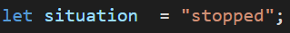

(Click)


Welcome to interactive tutorial. We will introduce some easy examples of coding to you. After each example you can go through steps and learn how to repeat the code yourself. Are you ready?
1. Create a span element in a div, dont forget to assign id to
your element (you will need this for styling your element in
CSS and also for accesing it with Java Script.

2. Add styling to your dot.

Position your dot, for ex. by
using position absolute.
Scale your dot, and add circle shape to
it by adding border-radius parameter.
Set background-color, pick the color
you would like to display when page is loaded.
Oh
well ......
... this can be a
bit overwhelming
so lets brake it
down to smaller
parts.
At first you need to access the element with which you would like
to work. In this example we do it by getting element by its id.
Since you will be working with it more, it can be good idea to save
it into variable.
There are different ways of accessing HTML elements:
- by id
- by tag name
- by class name
- by CSS selectors
- by HTML object collections
We want the dot to interact with based on if he
user moves his mouse either over or out of the
dot, thats why we need to use
EventListener.

- mouse events (MouseEvent): mousedown, mouseup, click, dblclick, mousemove, mouseover, mouseout
- touch events (TouchEvent): touchstart, touchmove, touchend, touchcancel
- keyboard events (KeyboardEvent): keydown, keypress, keyup
- form events: focus, blur, change, submit
- window events: scroll, resize, load, unload

Now, we need to define functions, which we used in
previous step. Their purpose is just to change
original styling (color) of the dot.
version 2
We will use JavaScript to create all needed HTML and CSS.
First we will create a number of circles that differs in size and position. We will also
create an mouseover-event, that will change the backround color of each circle when
the mouse hovers it. We can make all the circles we want from the same recipe, so again
we will focus on one cirlce in the example below.
Lastly we will make a "special" function, that congratulates you, when the red circles is clicked.
Step 1 is to create a "div" in the
HTML, that we can turn into a circle.

Step 2 is to style the circle.
Step 3 is to create an event that "reveals" the background color.

Thats it... now create as many circles as you want, but REMEMBER to use different variable
names for each circle.
Now we will add the "special" event that congratulates you, when the red circle has been clicked.

1. Create two different img tags in a div and locate the different pictures. Don't forget to assign id's to your tags (you will need this for styling your tag in CSS and also for accesing it with Java Script.


2. Add styling to your tags
Make sure the first picture is shown and the second picture is hidden,
with display "block" & "none"

Lets break it down to smaller parts

3. First we will make a variable with 'let' for each picture and make it equal to the id's from html with: document.getElementById("the html id")
4. Then we create a function for each picture,
that shows
what will happen when you click the picture.
Remember right now, the
second picture is there, but is not shown due to display: "none".


5. To make the functions work, we will have to take our variables and add an eventlistner to call the function, in this example by a "click" and then the name of the function
1. Just like the previous, you create two different img tags in a div. Don't forget to assign id's to your tags (you will need this for styling your tag in CSS and also for accesing it with Java Script.


2. Add styling to your tags
Make sure the first picture is shown and the second picture is hidden,
with display "block" & "none"

Lets break it down to smaller parts

3. Again, we will make a variable with 'let' for each picture
and make it equal to the id's from html with:
document.getElementById("the html id")
We then make a variable that defines clicks to start at 0.
4. Then we create a function,
where we take the value 'clicks'
and add an increment with '++' to increase the value.
After that, we state
that 'if' you click on the picture 5 times,
it will hide the first picture and show the next.


5. This time we only need the variable of the shown picture to make the function work. Like last time, we add an eventlistner to call the function, by a "click" and then the name of the function
1. Just like the previous, you create two different img tags in a div. Don't forget to assign id's to your tags (you will need this for styling your tag in CSS and also for accesing it with Java Script.


2. Add styling to your tags
Make sure the first picture is shown and the second picture is hidden,
with display "block" & "none"

Lets break it down to smaller parts

3. Again, we will make a variable with 'let' for each picture
and make it equal to the id's from html with:
document.getElementById("the html id")
4. We then create the function 'keyboard' and define the event, in this case (e)
We add the event with the defined (e).key,
which identifies the keyboard buttons and make it equal to the keyboard letters "k" & "d".


5. Now we add an eventlistner to call the function,
this time with 'keydown' to make the function reach when pressing down a key.
So if we press "k", the second picture will show and if we press "d", the first picture will show.
1. Just like the previous, you create two different img tags in a div.
For this one you also create a button, so you can change the picture.
Don't forget to assign id's to your tags and a class on the second picture.
br(you will need this for styling your tag in CSS
and also for accesing it with Java Script.


2. Add styling to your tags
For this one, you will hide the class in the second picture with display: "none".

Lets break it down to smaller parts

3. Again, we will make a variable with 'let' for each picture
and now also the button, and make it equal to the id's from html with:
document.getElementById("the html id")
4. Inside the function we have called 'shift', we give the values
a 'classlist.toogle' each, which takes our class "hidden" with the display: "none"
and shifts between the pictures.


5. So now when we add the eventlistner to the 'change' button, the class:"hidden" will toggle between the pictures.
1. Just like the previous, you create two different img tags in a div.
Don't forget to assign id's to your tags and a class on the second picture.
(you will need this for styling your tag in CSS
and also for accesing it with Java Script.


2. Add styling to your tags
Make sure the first picture is shown and the second picture is hidden,
with display "block" & "none"

Lets break it down to smaller parts

3. Again, we will make a variable with 'let' for each picture
and make it equal to the id's from html with:
document.getElementById("the html id")
4. 'SetTimeout' calls the function we have made inside it and will only work once.
It tells to show the second picture and hide the first picture in
10000 milisecond = 10 sec.

1. Just like the previous, you create two different img tags in a div.
Don't forget to assign id's to your tags and a class on the second picture.
(you will need this for styling your tag in CSS
and also for accesing it with Java Script.


2. Add styling to your tags
Make sure the second picture is hidden from the start,
with display "none"

Lets break it down to smaller parts

3. Again, we will make a variable with 'let' for each picture
and make it equal to the id's from html with:
document.getElementById("the html id")
For this one, we will use javascript to make the first picture show with
display: "block",
because it starts the 'if' statement below.
4. Create the 'setInterval' and call the function inside.
'If' the first picture is displayed as "block", as we did above,
it will display to "none" and make the second picture "block".
Then you make the exact opposit statement with the 'else if', so it swicthes between the statements.
Place how many seconds you want the interval to be in miliseconds.

Step 1 is to create "divs" in the
HTML, that we can turn into circles.


Step 2 is to style them into
circles and set their position.
Step 3 is to create an SWITCH that enables movment of the green circle.

Click on the color which you think corresponds with the RGB color code above. If you guessed it righ, row will change its color.
1. Create a basic structure of your
programme. Remember to write
stuff which you would like to display
when page is loaded for the first
time.
For a button we have already put a
name of function in HTML and its
trigger - "on click".


2. Add styling to all your
elements
Remember to set background-color of
squares, pick the color you would like to
display when page is loaded.
We can wrap everything what will happen into function which we have already named in HTML. So at first
we have to declare it and decide what we want this function to do.

At first we check what is written
on a button. If there is "START",
we change it to the text
"NEW COLOURS".
Also after pressing the button the
paragraph with instructions should
be displayed. So we change the
display from "none" to "inline"
If we want to create random color we can do this by creating rgb code. So we need
three randomly generated numbers in range from 0 - 255.
Function Math.random () gives us
random number between 0-1,
after multiplying it with 256, in
most cases we get a decimal
number so the last thing we want
to do is use Math.floor (), which
will convert this number to
largest integer less than or equal
to a given number.
Since we want to set color of
square to this color we need to
put generated numbers into
string in form: rgb(R, G, B).
Thats why we must create this
string (lines 16, 22, 28).

When combining Math.random() and Math.floor() remember that
the number with which you are multiplying is not included
Math.floor(Math.random() * 10) - Returns a random integer from 0 to 9.
Math.floor(Math.random() * 11) - Returns a random integer from 0 to 10.
Thats why we are multiplying with 256 in previous example even
though highest number we need is 255.

If we want color on top of the page to be
random, we can put all of our generated color
codes into an array, then mix it, and then pick
the first one from the list. In last line we
change text in inner HTML to this color code.
When the square is clicked, we
check if the color on top of the
page is equal to color of square,
if yes then background under
generated color code is changed
to this color.

Step 1 is to create the text that we
want to animate.


Step 2 is to extract each letter
and put into an array using the
split-method.
Step 3 is to then put a SPAN-element arround each letter.

Step 1 is to create the basics
for the comming animations.
It might not make any sence
now, but later they will be used in the animations.
Go back and forth a couple of
times untill you see the connection.

Now we will make a function that for each 100ms ads a class (fade) to the SPAN-elements we just created. We will also make an IF-statement that stops the function from executing, when all letters have been changed. The IF-statement also starts the next animation that we will do.

More a less a copy of the above, but the class will have another name, so the styling will be different.

Again more or less a copy of the above, but the class will have another name, so the styling will be different.
and the IF-statement will not execute a new animation.

1. Create a div with the displayed time of the watch and a div with the buttons.
Remember to assign class and id's to the elements.
(you will need this for styling your tag in CSS
and also for accesing it with Java Script.
2. Add styling to your tags
You can style it as you want, here is how I have styled it.
3. First we will make the variables that defines miliseconds, seconds & minutes
and set the values to 0.
4. Then we set the textvariables for seconds & minutes to 0,
because right now it will only show one 0 at each on the display.
6. This variable defines if the watch have started or stopped.
7. We start by creating the function called 'watch'.
In the function we increment the miliseconds with '++' and state that, when miliseconds
turns to 100 which will be equal to 1, it will increment the seconds and start the miliseconds over.
This will make more sense later, when we set the interval to call the function every 10 miliseconds.
10*100 = 1000 miliseconds = 1 sec
The same goes for seconds to minutes. This time we use 60 === 1, because there are 60 seconds to a minute,
so when seconds hits 60, it will increment minutes and start the seconds at 0 again.
Remember when we defined the textseconds and textminutes to 0?
Right now when the function runs, it will show only one 0 with each on the display, example 0:7:77
Instead we state that 'if' seconds or minutes are from 0-9, it will add another 0 to the display to make it look better.
We do that by setting the textvalues to "0" and adds a string to the second & minute values, which is the "0".
8. This function will make you able to start and stop the watch.
We start by calling the start/stop button in html with 'getElementById' and make a variable for the button. We then make
the button clickable by adding an 'eventlistner' with 'click' to start the function.
Remember earlier when we defined if the watch have 'started' or 'stopped'? We will be using it here to state that,
'if' the situation is 'stopped', which it will be from the start. By clicking the 'start' button
it will start the 'watch' function every 10 miliseconds and change the situation to 'started' and change
the button to 'stop'. And the other way around, if we click the 'stop' button now, it will stop the interval
with the 'watch' function and change the situation to 'stopped' and the button to 'start'.
9. This function will make the 'reset' button work.
First we call the 'reset' button in html with 'getElementById' and make a variable for the button,
so that we can call the function by clicking the 'reset' button.
We then make the function 'back'. In the function we clear the interval from last function, which
reset the miliseconds, seconds & minutes values back to 0. Becides that, we change the display back to 00:00:00
and reload the start/stop button back to 'start'.
Go ahead, give it a try!
/backfunc.png)
- declaring variables
- loops and switch
- conditional statements
- functions
- arrays
- accessing/changing/creating of HTML elements
- eventListeners
- random